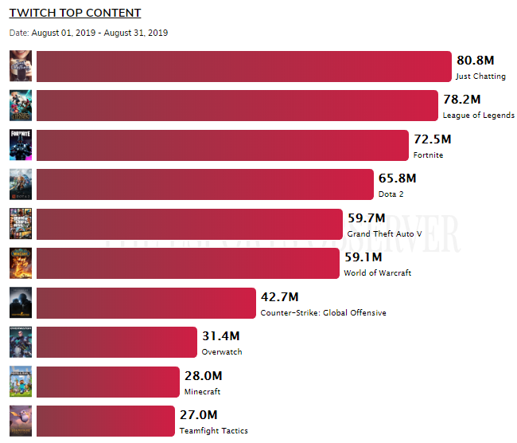
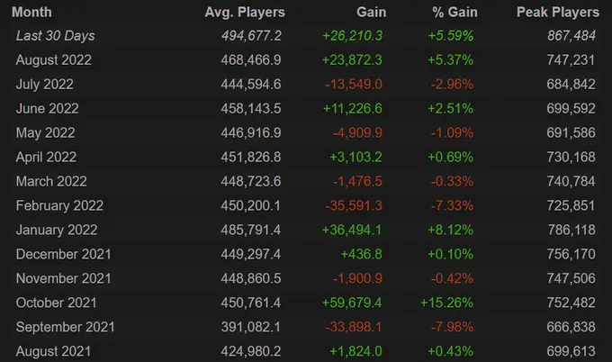
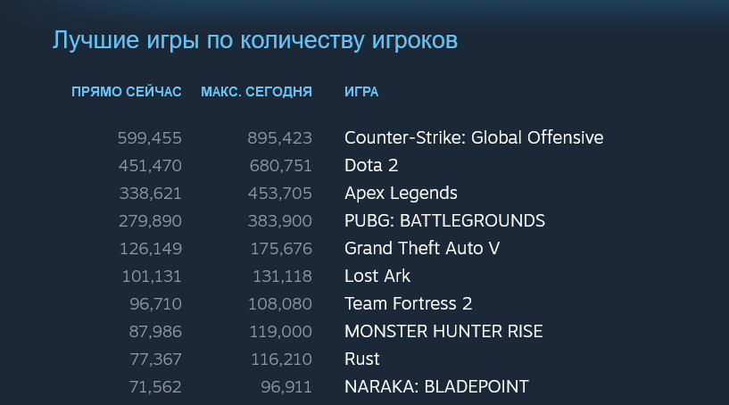

Интересные факты
Актуально на
- Дата выхода DotA 2 - 9 июля 2013 года

- Доход от DotA 2 оценивался в 406 миллионов долларов на конец 2017 года
Однако никто не знает, каково точное число денег, которые зарабатывает Valve сегодня. Компания давно перестала раскрывать такую информацию. Одно можно сказать наверняка - для бесплатной игры это очень много. Это было достигнуто только с помощью микротранзакций, что делает это достижение еще более впечатляющим.
Эти транзакции не влияют на геймплей, так как игроки платят просто за скины героев и голосовые пакеты
- DotA 2 - девятая по популярности игра на Twitch

- DotA 2 имеет около 2 миллионов игроков в месяц

- Пиковое число одновременных игроков составляет 1 291 328 человек
Популярность DotA достигла пика в 2016 году. Именно тогда у нее было больше всего одновременных игроков.
- В ноябре 2021 года база игроков DotA 2 увеличилась на 15,26%
Такие игры, как DotA 2, всегда были известны своей турнирной сценой. Во время огромных турниров количество игроков и зрителей, как правило, очень вырастает.
Во время недавнего турнира The International 10 количество игроков DotA 2 в 2022 году выросло на невероятные 15,26%. Это первый большой прыжок с февраля 2016 года!
- 12,51% всех игроков DotA 2 - из США
Китайские игроки заработали больше всего денег в призовых выигрышах, даже несмотря на то, что США вносят наибольший вклад в DotA 2.
За США следуют россияне, составляющие 10,53% от общего числа игроков.
Далее - Бразилия с 5,09% и Германия с 4,44%. Пятое место в настоящее время занимает вьетнамское население DotA 2 с 3,9%.
- DotA 2 - вторая по популярности игра в Steam

Однако никто не знает, каково точное число денег, которые зарабатывает Valve сегодня. Компания давно перестала раскрывать такую информацию. Одно можно сказать наверняка - для бесплатной игры это очень много. Это было достигнуто только с помощью микротранзакций, что делает это достижение еще более впечатляющим. Эти транзакции не влияют на геймплей, так как игроки платят просто за скины героев и голосовые пакеты
Популярность DotA достигла пика в 2016 году. Именно тогда у нее было больше всего одновременных игроков.
Такие игры, как DotA 2, всегда были известны своей турнирной сценой. Во время огромных турниров количество игроков и зрителей, как правило, очень вырастает. Во время недавнего турнира The International 10 количество игроков DotA 2 в 2022 году выросло на невероятные 15,26%. Это первый большой прыжок с февраля 2016 года!
Китайские игроки заработали больше всего денег в призовых выигрышах, даже несмотря на то, что США вносят наибольший вклад в DotA 2. За США следуют россияне, составляющие 10,53% от общего числа игроков. Далее - Бразилия с 5,09% и Германия с 4,44%. Пятое место в настоящее время занимает вьетнамское население DotA 2 с 3,9%.